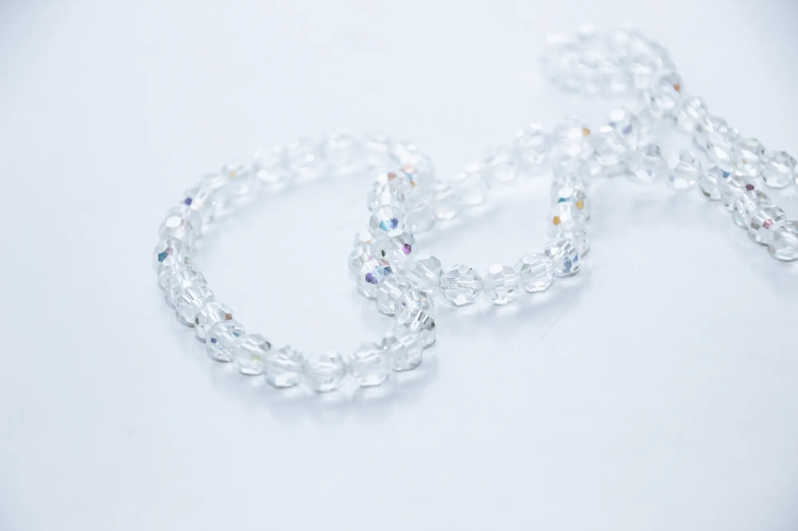
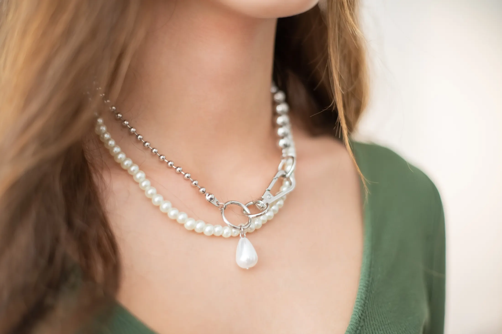
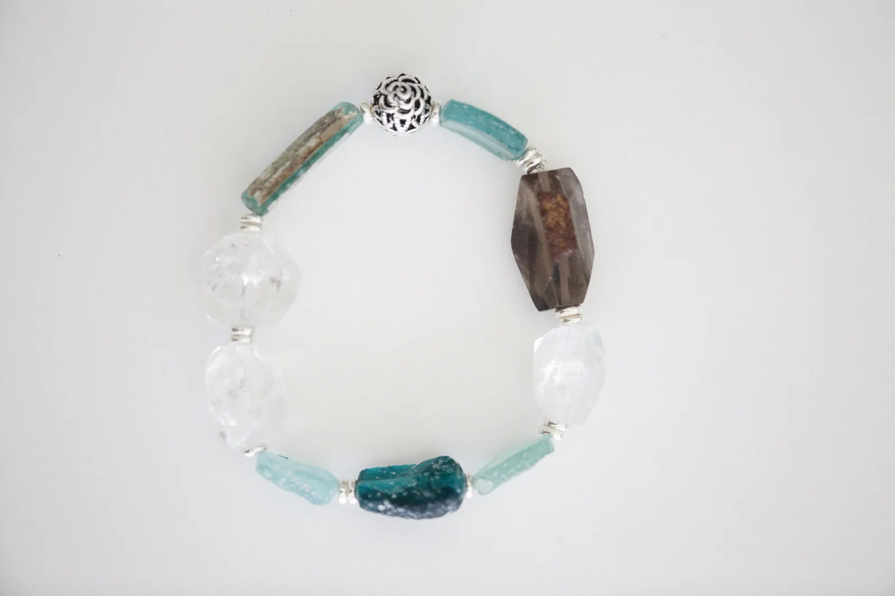
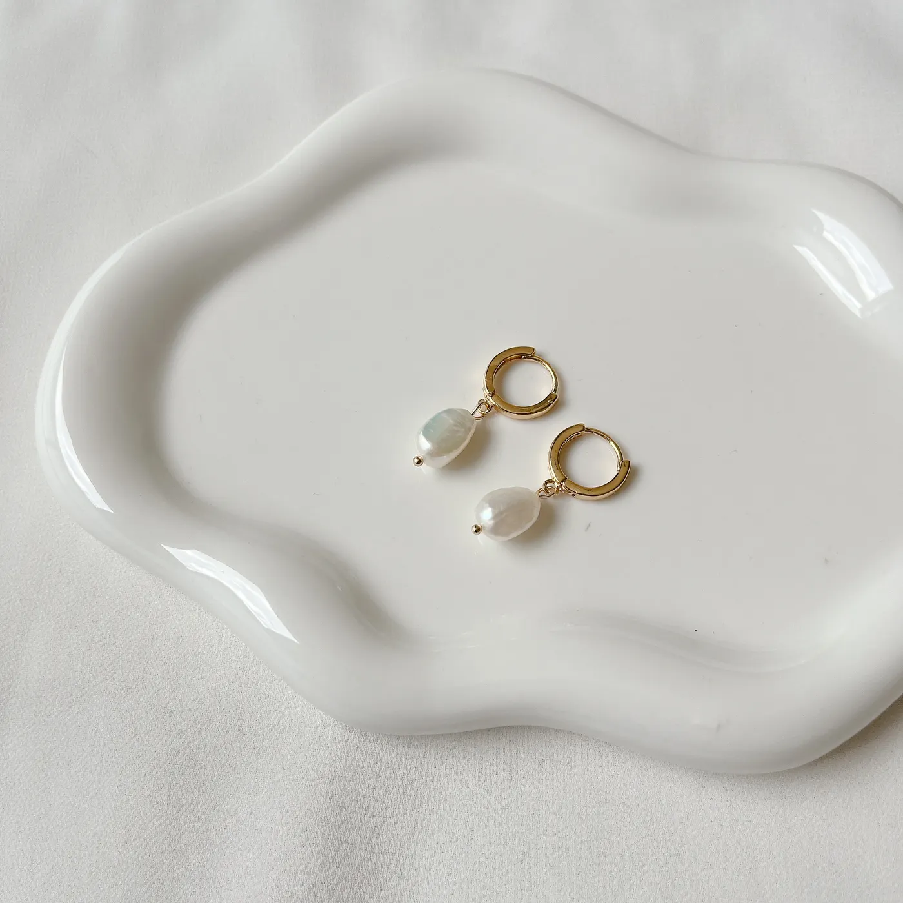
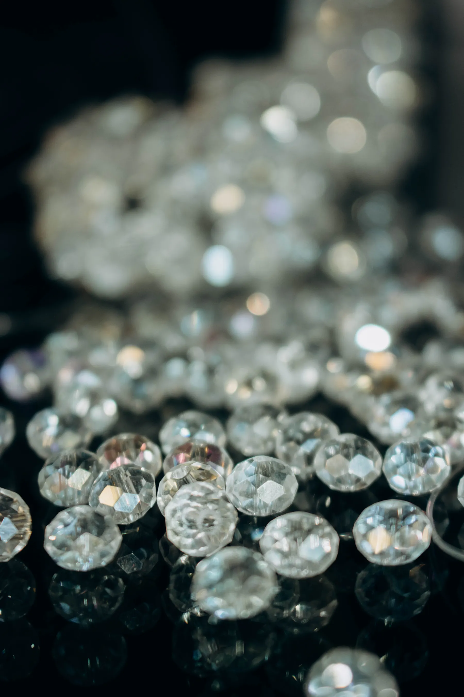

01
Cristal de roca
Cuentas facetadas que devuelven la luz en cada cara. Las tenés armadas en collar o sueltas, en tira de 4, 6 y 8 mm.

Cristal de roca · Piedras · Perlas
Collares, pulseras y aros con acero quirúrgico. Y para crear: perlas, cuentas, mostacillones, tanza y fornituras.
Por material
En cada línea, la pieza lista para usar y el insumo para crearla.

01
Cuentas facetadas que devuelven la luz en cada cara. Las tenés armadas en collar o sueltas, en tira de 4, 6 y 8 mm.

02
Aguamarina, cuarzo y citrino: cada piedra trae su veta y su tono, así que no hay dos pulseras iguales.

03
Perlas clásicas con acero quirúrgico, que no se oscurece con el uso. En aros, en collar o en tira para armar.
04
La base de toda pieza: tanza cristal en tres grosores, mostacillones y fornituras de acero para cerrarla.
Armada o suelta
La bijouterie y sus insumos en la misma tienda: el collar terminado y la tira con la que se arma.
36 cm más 5 de extensión y mosquetón de acero quirúrgico. Lo abrochás y listo.
$16.900
Los mismos cristales, sin armar: 63 por tira de 38 cm. Para un collar como este usás 57 y te sobran 6.
$4.300 la tira

Materiales
Calculadora de cuentas
Elegí qué vas a armar, el material y la medida. Te decimos cuántas tiras llevar, cuánta tanza y qué fornituras.
57cristales de 8 mm
Por pieza de 36 cm, con 2 cm para el cierre
Estimado$13.100
Cálculo estimado: dejamos 2 cm para el cierre y 20 cm de tanza extra por pieza para los nudos.
Tienda
10 productos
No encontramos eso. Probá con otra medida, otro material o limpiá los filtros.
Antes de comprar
Con Mercado Pago, al finalizar la compra desde el carrito. Si tenés una duda con el pago, escribinos por WhatsApp.
Cuando confirmás el pedido te escribimos por WhatsApp para coordinar la entrega.
Todas las tiras miden 38 cm. En cristal facetado son 126 cuentas de 4 mm, 84 de 6 mm o 63 de 8 mm. Para tu pieza, usá la calculadora de cuentas.
0,25 mm para cuentas chicas y mostacillones; 0,30 mm para cuentas de 6 y 8 mm; 0,40 mm para piedras pesadas o collares largos.
Porque no se oscurece con el uso diario. Está en los cierres de la bijouterie y en las fornituras, así tus piezas terminan igual.
No: son naturales, así que el tono y las vetas cambian de una tira a otra. La foto muestra una tira de referencia.
Contacto
Consultanos por WhatsApp, seguinos en redes o dejanos tu mensaje acá.
+54 9 299 402-6404Todavía no sumaste nada. Empezá por una tira o por una pieza lista para usar.
Ir a la tiendaSubtotal$0
Cobro con Mercado Pago